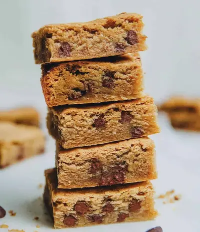

Vegan Chickpea Blondies

Ingredients
- 1 cup oat flour
- 1 cup almond flour
- 2 teaspoons baking powder
- ½ teaspoon sea salt
- 1 cup maple syrup
- ½ cup cooked chickpeas (rinsed and drained)
- ½ cup almond butter
- 2 teaspoons vanilla extract
- ¾ cup chocolate chips
Steps
- Preheat oven to 375 degrees F / 190 C.
- Put flours, baking powder and salt in a large bowl and whisk to break up clumps.
- Put maple syrup, chickpeas, almond butter and vanilla into a food processor. You can use a blender too if you prefer. Blend until smooth.
- Add the blended mix into the bowl with the flour and mix until combined.
- Fold in the chocolate chips.
- Pour into a prepared square baking dish (9x9 or 8x8 works).
- Bake for 25-28 minutes or until a toothpick comes out clean.
- Allow to cool completely before cutting, this allows it to set more and helps with the texture.
- Devour!
Recipe by Anjali Shah, from The Picky Eater. Saved here for personal use; the original has the full notes, tips and photos. Open original